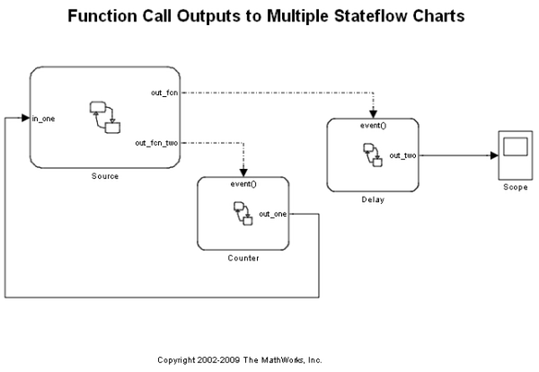
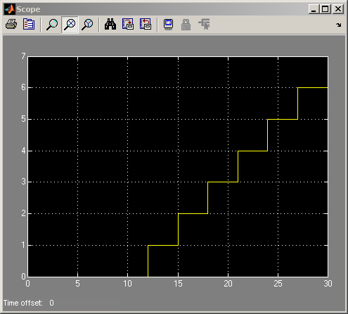

Driving Multiple Charts Using Function Call Outputs
The main purpose of this demonstration is to illustrate the use of feedback when using function-call outputs. The 'Source' chart sends the signal 'out_fcn_two' when transition to from State A to State B or vice versa. 'out_fcn_two' activates 'Counter' every time it is sent out. 'Counter' also sends out a data output, 'out_one' which is fed back to 'Source' as data 'Input from Simulink®'. If the source is in State B, then a transition is taken from State B to State C if 'out_one' is greater than 10. If this transition is taken, then a new function-call event, 'out_fcn' is sent to the 'Delay' chart. The 'Delay' chart simply adds a 1 to its output, 'out_two' every time it is activated. In the output, 'Scope', notice that there is an initial delay that is the time it takes for the first 'out_fcn' to be sent.
 